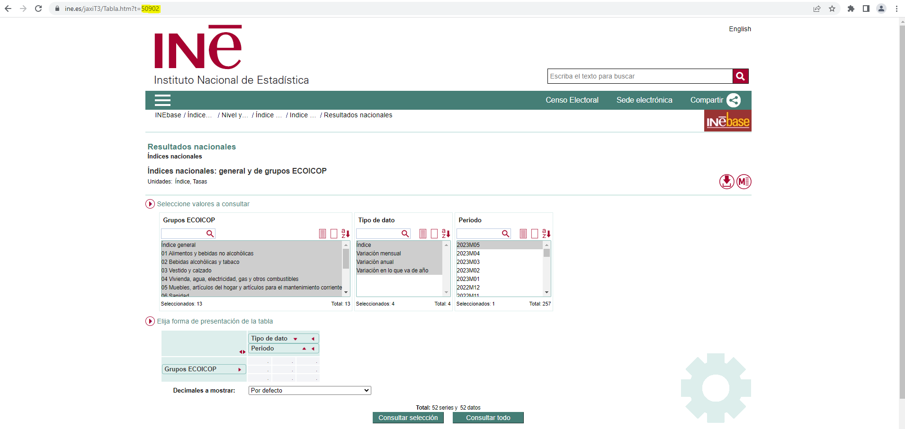
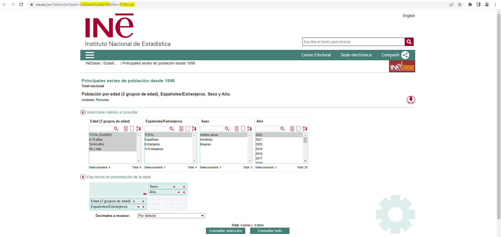
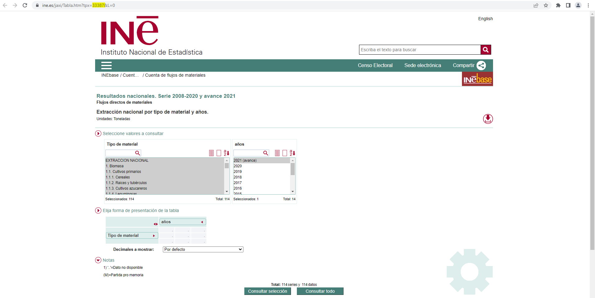
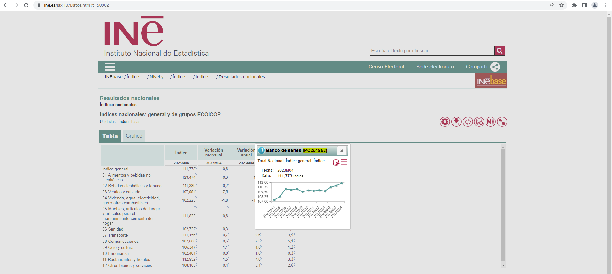

How to identify the codes of tables and series on the INE website
Source:vignettes/articles/identify_codes.Rmd
identify_codes.RmdThis article is aim to help identify the codes of tables and series on the INE website that are necessary to perform data queries.
Obtaining the identification code of a table
When browsing to a table, there are three possible cases when it comes to identifying its ID.
REMARK: The id of a table is unique and immutable, no matter what variables/values have been selected in the table.
Case one
- URL: https://www.ine.es/jaxiT3/Tabla.htm?t=50902
- ID: URL t parameter 50902

library(ineapir)
# Request table data with id = 50902
table <- get_data_table(idTable = 50902, nlast = 1, unnest = TRUE)
table[1:2,c("Nombre", "FK_Periodo", "Anyo", "Valor")]
#> Nombre FK_Periodo Anyo Valor
#> 2 Total Nacional. Índice general. Variación mensual. 4 2024 0.7
#> 3 Total Nacional. Índice general. Variación anual. 4 2024 3.3Case two (pc-axis file)
- URL: https://www.ine.es/jaxi/Tabla.htm?path=/t20/e245/p08/l0/&file=01001.px
- ID: concatenate URL parameters path and file into one single ID t20/e245/p08/l0/01001.px

# Request table data with id = t20/e245/p08/l0/01001.px
table <- get_data_table(idTable = "t20/e245/p08/l0/01001.px", nlast = 1, unnest = TRUE)
head(table, 3)
#> Nombre NombrePeriodo Valor Secreto
#> 1 TOTAL EDADES, TOTAL, Ambos sexos 2022 47475420 FALSE
#> 2 TOTAL EDADES, TOTAL, Hombres 2022 23265381 FALSE
#> 3 TOTAL EDADES, TOTAL, Mujeres 2022 24210039 FALSECase three (tpx file)
- URL: https://www.ine.es/jaxi/Tabla.htm?tpx=33387&L=0
- ID: URL tpx parameter 33387

# Request table data with id = 33387
table <- get_data_table(idTable = 33387, nlast = 1, unnest = TRUE)
head(table, 3)
#> Nombre NombrePeriodo Valor Secreto
#> 1 EXTRACCION NACIONAL 2022 (avance) 350342661 FALSE
#> 2 1. Biomasa 2022 (avance) 117875849 FALSE
#> 3 1.1. Cultivos primarios 2022 (avance) 60300741 FALSEObtaining the identification code of a series
The tables introduced in cases two and three not include temporal series. Only tables from case one contain temporal series. In order to obtain the identification code of a series it is necessary to carry out a number of steps.
- Browse to a table containing the series of interest.
- Make the selection of values in the table and perform the query.
- Click on the corresponding value cell.
- The pop-up window shows, among other information, the identification code of the series associated with the cell that was clicked on.

# Request series data with code = IPC251856
serie <- get_data_series(codSeries = "IPC251856", unnest = TRUE)
serie[1,c("Nombre", "FK_Periodo", "Anyo", "Valor")]
#> Nombre FK_Periodo Anyo Valor
#> 1 Total Nacional. Índice general. Variación anual. 4 2024 3.3